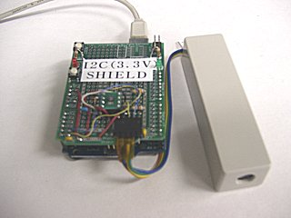
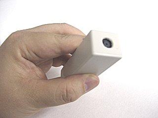
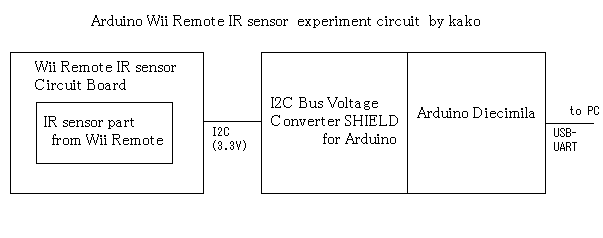
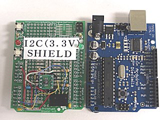
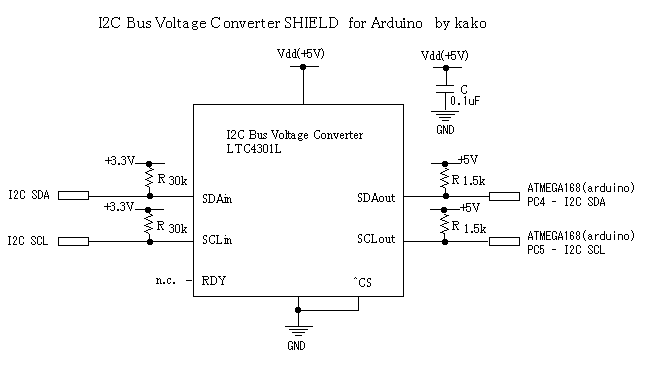
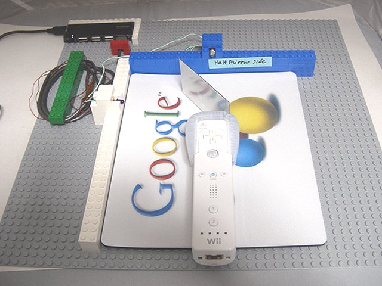
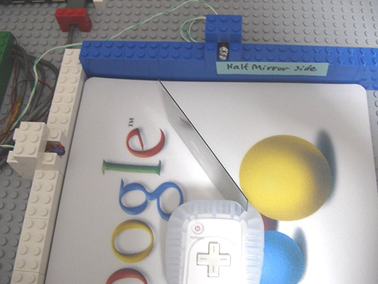

Original text
初期化コマンド手順(1) 制御レジスタアドレス0x30に対して、データ0x01を書き込む(2) 制御レジスタアドレス0x30に対して、データ0x08を書き込む(3) 制御レジスタアドレス0x06に対して、データ0x90を書き込む
Contribute a better translation
Small story 2008-009
Try using the infrared sensor of the Wii remote controller by connecting it to the microcomputer (+ mouse)
Last year (2007), I analyzed the infrared sensor for pointing of the Wii remote controller and tried to connect it to other devices . Following that, this time, I made a prototype of a circuit that connects to an Arduino
kit that uses an AVR microcomputer . (2008-04-13) 1. As for the hardware board, the universal board for trial production is overlaid on the Arduino kit. The white bar-shaped case contains the sensor taken from the Wii remote controller and the self-made circuit . The connection is as shown in this figure. -Wii remote control infrared sensor circuit -I2C voltage conversion shield -Arduino Diecimila It consists of the above three parts. Voltage conversion is required to connect an infrared sensor operating at 3.3V to a microcomputer operating at 5V. The Wii remote control infrared sensor circuit has been remade by reducing the size of the same circuit that was made before . The I2C voltage conversion shield was made using a universal board called Prototype Shield for trial production. The I2C voltage conversion shield is connected so that it overlaps the board of Aruduino. The circuit for I2C voltage conversion was made using an IC called LTC4301L.
 



This IC converts the voltage of the I2C bus. It should work with LTC4301 instead of LTC4301L.
2. Software
Based on the previous source code, I created software for Arduino.
[ wii_remote_ir_sensor_sample.zip --source code (download) ]
(Added at a later date 2008-09-21)
I tried to rewrite the software using WinAVR.
[ wii_remote_ir_sensor_sample2.zip --source code (download) ]
How to use the infrared sensor of the Wii remote controller
I will write a brief explanation of how to use the sensor.
The I2C bus standard protocol requires that the device's address number be sent first when communicating with the device.
The address of the infrared sensor used in the Wii remote controller is 0x58.
The source code sometimes says 0xB0, because the upper 7 bits are the address and the lower 1 bit is the R / W specified bit.
Initializing the sensor is easier than accessing the sensor inside the Wii Remote via Bluetooth .
This is because the chip enable control and the ON / OFF control of the clock oscillation circuit are not performed.
The command for initialization is sent in the following format.
[START condition] [0xB0] [Control register address] [Write data] [STOP condition]
The control register address is specified in 8 bits.
It is not yet known in detail which address has what function.
For the time being, the sensor can be operated by writing with a certain fixed value and procedure.
Initialization command procedure
(1) Write data 0x01 to
control register address 0x30 (2) Write data 0x08 to control register address 0x30
(3) Write data 0x90 to control register address 0x06
(4) Write data 0xC0 to control register address 0x08
(5) Write data 0x40 to control register address 0x1A
(6) Write data 0x33 to control register address
0x33 It seems to be a simplification of the sensitivity setting procedure to be explained.
It seems that the sensitivity setting method of the infrared sensor is
set simply above, but if you want to set it properly, specify the four
parameters p0, p1, p2, p3 and write in the following procedure
(1) Write data 0x01 to control register address 0x30
(2) Write data 0x02,0x00,0x00,0x71,0x01,0x00,p0 to control register address 0x00 (write 7 bytes)
(3) Control register Write data 0x00, p1 to address 0x07 (write 2 bytes)
(4) Write data p2, p3 to control register address 0x1A (write 2 bytes)
(5) Write control register address 0x33 Data 0x03 is written
(6) For the control register address 0x30,
when writing multiple bytes to write data 0x08, the register address
is automatically incremented, so continuous writing is possible.
When the sensitivity is 1 , the sensitivity parameters are
p0 = 0x72, p1 = 0x20, p2 = 0x1F, p3 = 0x03.
For sensitivity 2, p0 = 0xC8, p1 = 0x36, p2 = 0x35, p3 = 0x03 For
sensitivity 3, p0 = 0xAA, p1 = 0x64, p2 = 0x63, p3 = 0x03 For
sensitivity 4, p0 = 0x96, p1 = 0xB4, p2 = 0xB3, p3 = 0x04
When sensitivity 5, p0 = 0x96, p1 = 0xFE, p2 = 0xFE, p3 = 0x05
After initialization (after sensitivity setting), the coordinates of
the light spot detected by the sensor are read out. be able to.
How to read the sensor output After sending the command
[START condition] [0xB0] [0x36] [STOP condition]
, read as follows.
[START condition] [0xB1] [Read data] x 16 bytes
Format of read data
3 bytes are stored in the following order.
[First 1 byte] [Coordinates 1 ... 3 bytes] [Coordinates 2 ... 3
bytes] [Coordinates 3 ... 3 bytes] [Coordinates 4 ... 3 bytes]
If these 3 bytes are XX, YY, SS, then
X Coordinates = (SS & 0x30) << 4 + XX
Y Coordinates = (SS & 0xC0) << 2 + YY
By calculating, the coordinate values can be obtained.
0x3FF is returned when the coordinate value is invalid.
Role of control register
Address 0x00 to 0x08 --- Parameter setting for
detection Address 0x1A to 0x1B --- Parameter setting for detection (2)
Address 0x30 --- Sensor operation mode (?) First write 0x01, then Address to write 0x08
0x33 --- Sensor operation mode (?) Write 0x03 (or 0x33?)
Parameter setting
unknown for detection Unknown
The inside of the sensor for processing the image taken by the camera and detecting the light spot.
It is presumed that there may be parameters such as the threshold value for binarization of the software parameter settings and the threshold value for the size of the light spot.
(Added at a later date 2008-10-06)
It seems that some parameters have been revealed. There is a lot of information on the page
http://wiki.wiimoteproject.com/IR_Sensor .
Before trying to use the Wii remote control as a mouse with an
infrared sensor, whether the Wii remote control can be placed on a desk
and the infrared sensor built into the remote control can be used to
detect the amount of movement from side to side and back and forth.
tried.
Although
it is possible to detect the amount of movement in the front-back
(depth) direction with two light sources arranged side by side like a
genuine sensor bar, it was not accurate enough to be used with a mouse.
I
thought about a method to accurately detect the amount of movement in
the front-back direction by attaching external components of the optical
system. (2008-08-05)

・ Place a mouse pad so that the Wii remote controller can be easily slid on the desk.
-Fix infrared light emitting diodes on the left and upper sides of the mouse pad.
-The height of the light emitting diode on the upper side is higher than that on the light emitting diode on the left side.
-Attach
a half mirror to the tip of the infrared sensor at the tip of the Wii
remote controller at an inclination of 45 degrees. Attach it so that it works with the Wii remote controller.
-The effect of the half mirror allows the infrared sensor to detect the upper and left light emitting diodes at the same time.

-When
the remote controller is moved left and right, the light spot of the
upper light emitting diode is detected as the left and right movement on
the screen.
-When
you move the remote control back and forth, the light spot of the light
emitting diode on the left side is detected as "left and right"
movement on the screen.
-In other words, two light spots are detected on the screen, and each moves left and right.
-In
order to determine which light spot is on the upper side or the left
side, the height of the upper light emitting diode is increased, and the
upper light spot on the screen is the upper light emitting diode.
-By
inserting software processing that converts the amount of movement of
the light spot on the screen into the movement of the X-axis / Y-axis of
the mouse, it is possible to use the sensor of the Wii remote
controller as a mouse.
-However,
since software processing is required, it can only be used when the Wii
remote control software is created on the PC so far.
I
had an idea of how to use a half mirror at the beginning of last year
(2007), but it took a long time to get a half mirror and actually make
it.
To play a Wii game with a mouse,
analysis
of an infrared sensor shows what kind of signal comes out of the sensor
according to the coordinates at which the remote control is pointed.
By
creating a circuit that outputs the same signal, you may be able to
connect the output from a pointing device other than an infrared sensor
to the board of the Wii remote controller and operate the Wii with a
mouse, for example. (2008-08-05)